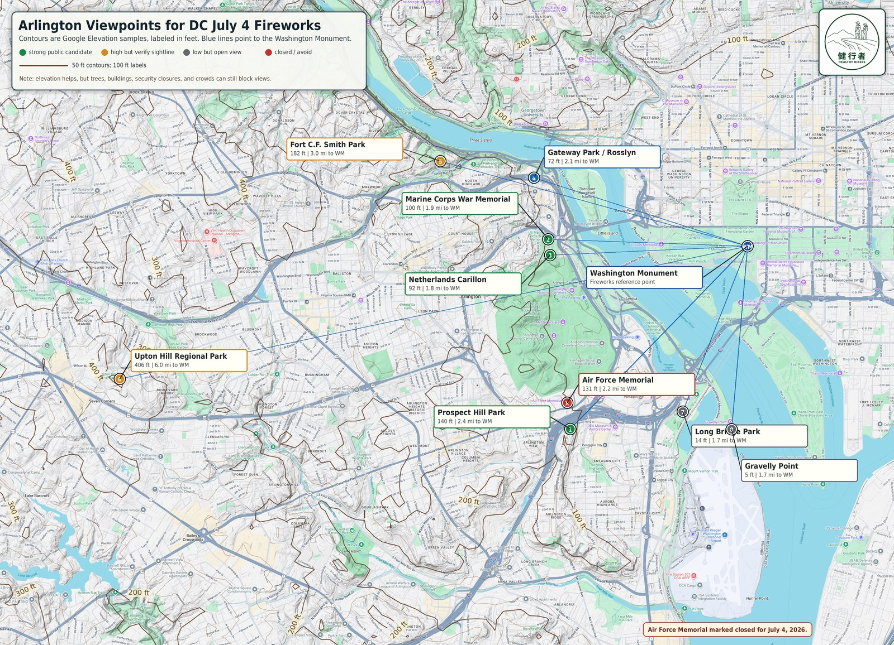

East Washington Monument Grounds
Best alignment for a monument-plus-fireworks photo: stand east of the monument near the 14th Street side and shoot west so the fireworks appear behind the obelisk. Approx. 38.88950, -77.03150.
Open 3D ViewInteractive 3D ArcGIS SceneView pages for comparing sightlines toward the Washington Monument from key July 4 viewing and photo locations.

Each page loads the public DCGIS July 4th Fireworks Web Scene with a preset camera, Washington Monument marker, Blue Angels formation, fireworks/photo annotation, and sightline overlay.
Best alignment for a monument-plus-fireworks photo: stand east of the monument near the 14th Street side and shoot west so the fireworks appear behind the obelisk. Approx. 38.88950, -77.03150.
Open 3D ViewGround-level view from the Marine Corps War Memorial ridge looking east toward the Washington Monument.
Open 3D ViewNearby high-ground view from the carillon area, also looking across the Potomac toward the National Mall.
Open 3D ViewWaterfront park view looking northwest toward the Washington Monument and fireworks scene.
Open 3D ViewWaterfront memorial view from the Columbia Island area, looking northeast toward the Washington Monument.
Open 3D ViewThese 3D views are intended for scouting sightlines. Buildings, trees, access rules, closures, crowds, weather, and security restrictions can change what is actually visible on July 4.